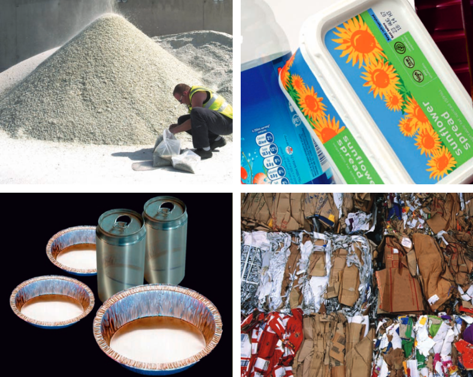
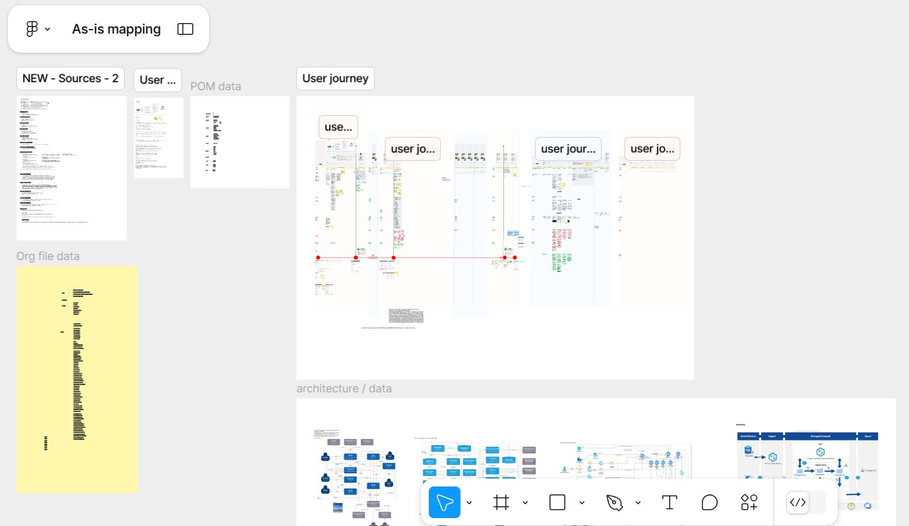
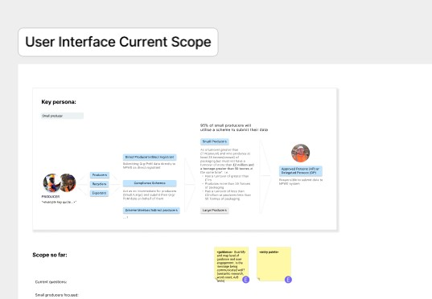
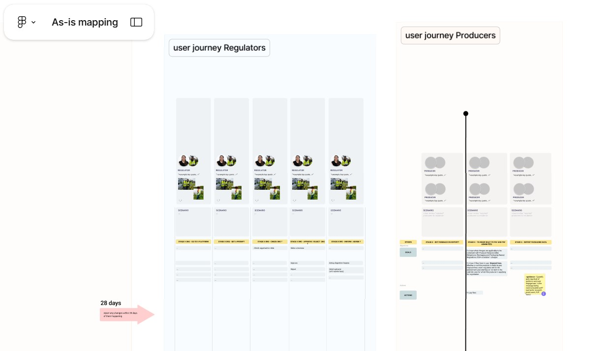
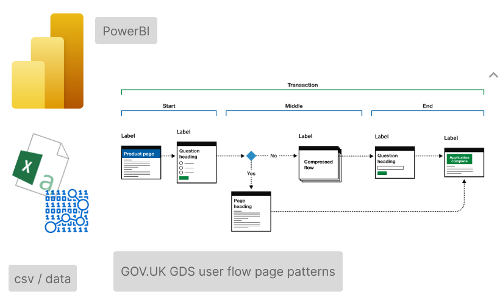
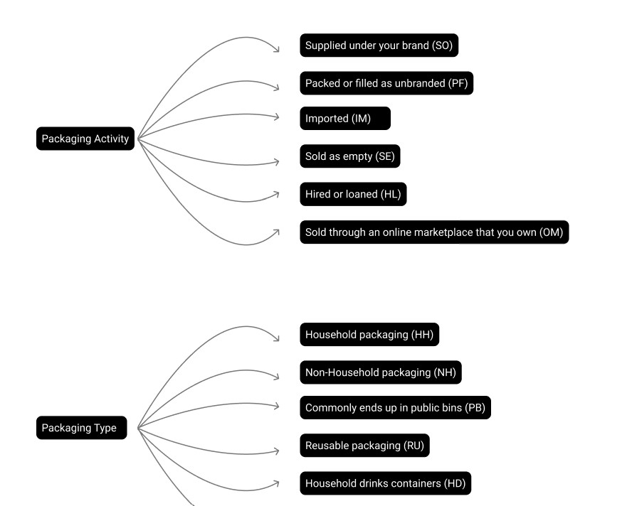
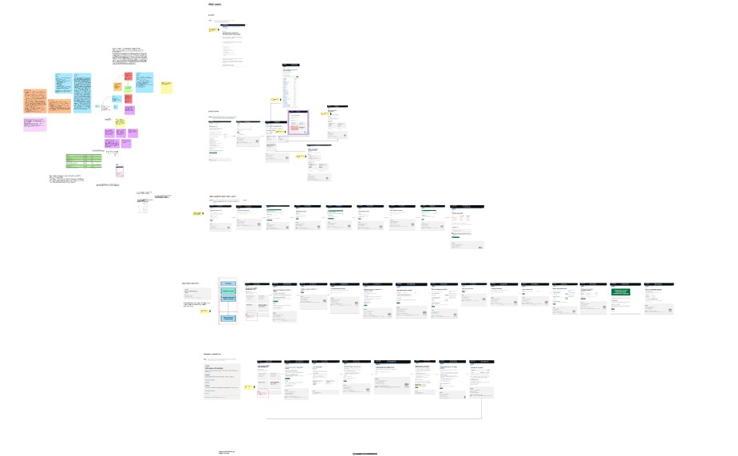

- Client:
- DEFRA
- Project(s):
- Extended Producer Responsibility for Packaging (EPR) and Packaging Recovery Notes (PRN) and Materials Facilities.
- Role:
- Mostly user interface designer and user experience designer. Some user research and service design.
About the project(s)
The Extended Producer Responsibility (EPR) is a regulatory framework that holds producers accountable for the environmental impact of their packaging throughout its lifecycle. It incentivises sustainable packaging design, waste reduction, and improved recycling processes by holding producers responsible for the amount and type of packaging they introduce into the market.
Source images: DEFRA - Making the most of packaging
Packaging Recovery Notes (PRNs) are evidence-based certificates that businesses can purchase to prove compliance with packaging recycling obligations, ensuring that a corresponding amount of packaging waste is recycled. Materials Facilities play a crucial role in the recycling chain by sorting, processing, and supplying recyclable materials to manufacturers, promoting a circular economy and reducing landfill waste. Together, these systems drive responsible waste management and sustainability in the packaging industry.
I began these projects, as always, by gaining a deep understanding of both the business and user needs, as well as the specific problems to be solved. I drew upon existing research and collaborated with stakeholders, while also taking the initiative to apply my user research skills. Drawing from my previous experience, I conducted a lean, quick self-discovery study to identify key areas of focus.
To structure my insights, I created my own lean UX canvas, user task maps, user diaries, and empathy maps. Additionally, I developed discovery user flows and journey maps to pinpoint critical micro-moments in the user experience.
Created user flow diagrams, empathy maps, user flows with page patterns as per UK Government Digital Service (GDS) Design System, updated online prototypes using the GOV.UK Prototype Kit, GitHub repository and code (nunjucks).
My goal was to identify the real users of the service, empathise with their daily experiences, and refine the experience to better meet their needs. Mostly I aimed at serving producers and regulators.
 Conducted user experience research on platforms such as PowerBI and GOV.UK web pages web applications to understand producers and regulators' behaviour, main objectives, and tasks.
I also created user task diagrams and data maps to provide me with a clear visualisation of data flow and its interconnections with user objectives and tasks, ensuring better alignment and understanding. I have used artificial intelligence from Eviden’s internal platform to assist me with this task.
 Source images: GDS flow diagrams - Figma community - MHCLG and Paul Smith, Wikipedia PowerBI logo, DEFRA CSV file data mapping.
I analysed previous documentation, user interviews, and workshops to identify user emotions, challenges, and opportunities for improvement across platforms and standards. My focus was on enhancing the overall user experience by creating a seamless and holistic journey, aligning with an omnichannel objective.
 Read more case studies